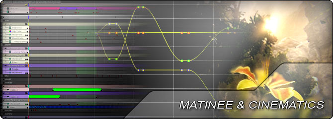

UDN
Search public documentation:
MatineeAndCinematicsHomeKR
English Translation
日本語訳
中国翻译
Interested in the Unreal Engine?
Visit the Unreal Technology site.
Looking for jobs and company info?
Check out the Epic games site.
Questions about support via UDN?
Contact the UDN Staff
日本語訳
中国翻译
Interested in the Unreal Engine?
Visit the Unreal Technology site.
Looking for jobs and company info?
Check out the Epic games site.
Questions about support via UDN?
Contact the UDN Staff
UE3 홈 > 마티네 & 시네마틱
마티네 & 시네마틱

- Full Screen Movie KR - 풀스크린 무비 재생 시스템에 대한 개요입니다.
- Matinee User Guide KR - 마티네 에디터 사용 안내서입니다.
- Matinee Track Reference KR - 마티네에서 사용할 수 있는 모든 트랙에 대한 완벽 참고서입니다.
- Matinee AnimControl Track KR - 마티네의 AnimControl 트랙의 자세한 사용 안내서입니다.
- Curve Editor User Guide KR - 언리얼 엔진 3 의 커브 에디터 사용 안내서입니다.
- Using InterpActors KR - 키즈멧을 사용하여 움직이는 액터, 소위 '무버'(mover)를 만드는 법입니다.
- Creating Cinematics KR - 언리얼 엔진 3 를 사용하여 게임내 시네마틱과 컷씬을 만드는 법입니다.
- Capturing Cinematics And Gameplay KR - 게임내 시네마틱과 게임플레이 영상을 캡처하는 법입니다.
- Movie Capture KR 무비 캡처 - 마티네나 게임내 동영상을 AVI 비디오나 연속 이미지로 캡처하는 툴입니다.
- Mastering Unreal Cinematic Sequences KR - 언리얼 마스터하기 책 시리즈에서 시네마틱 챕터 부분입니다.